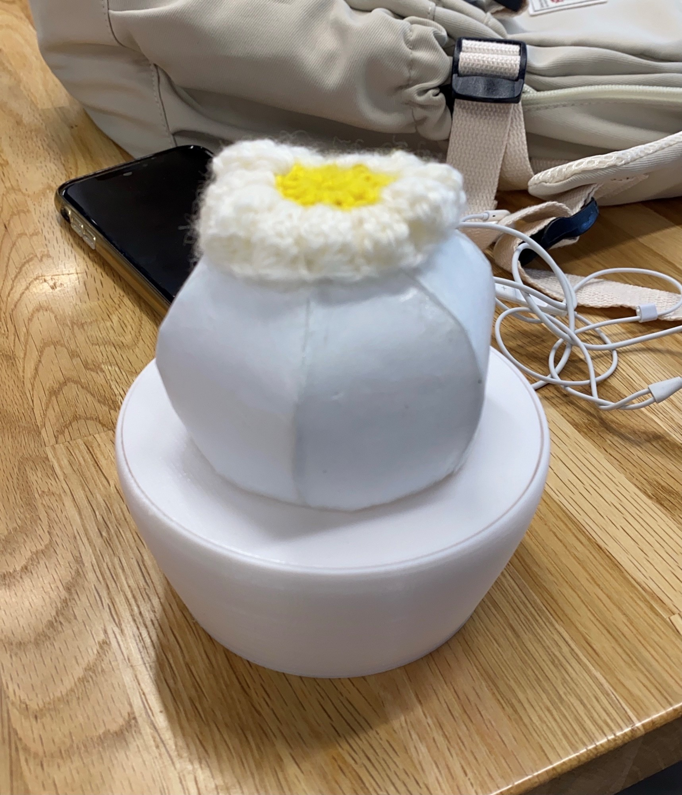

Final Project
課題：Iotを使ったモノを作る
作品名：さぼてん

コンセプト：目に見えないものを目に見える形で表現する
モチーフ：サボテン
コロナ渦で心身ともに疲弊していた世の中。ココロはネガティブに、交流は希薄になりつつあります。
本来人は生命力の強さと愛情の柔らかさを持ち合わせていたはずです。
自身の「生」のリズムを共鳴させたサボテンの光で、ココロをリセットしてください。
使用した機材：3Dプリンタ、和紙、毛糸